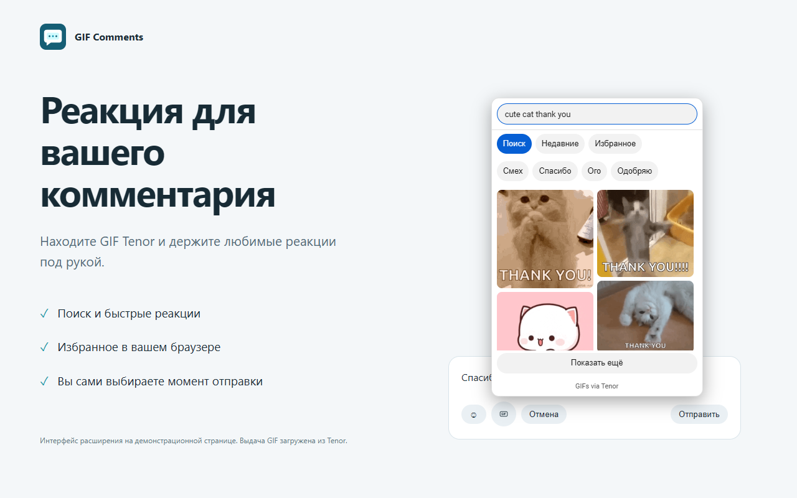

Быстрый выбор
Находите GIF в Tenor, используйте быстрые реакции и сохраняйте любимые.
Поиск Tenor, избранное и недавние GIF — рядом с вашим комментарием YouTube. Выберите реакцию, допишите текст и отправьте сообщение, когда готовы.
Ранний выпуск. Доступна установка из ZIP; установка из каталога будет добавлена после подтверждения публикации.
Находите GIF в Tenor, используйте быстрые реакции и сохраняйте любимые.
Выбор GIF только прикрепляет её к черновику. Публикация — отдельное действие.
Избранное, история и резервные черновики хранятся в вашем браузере.

Для Firefox 140 и новее. Временное дополнение загружается через страницу отладки и удаляется после закрытия браузера.
Скачать для FirefoxИнструкция Firefox →Распакуйте архив и загрузите папку расширения через режим разработчика. Расширение остаётся установленным при сохранении этой папки.
Скачать для Chrome / Edge / BraveИнструкция Chromium →Это ZIP-пакеты для ручной установки, не подписанный Firefox XPI и не установка из магазина. Реальная отправка зависит от YouTube, вашего аккаунта и видео. Установка проверена в Firefox и Edge; публикация через реальный YouTube-аккаунт пока не подтверждена.
about:debugging#/runtime/this-firefox.После закрытия Firefox временное дополнение нужно загрузить снова. Не отключайте проверку подписей браузера.
chrome://extensions, edge://extensions или brave://extensions.manifest.json.Не удаляйте и не перемещайте папку установленного расширения. Если старая версия уже установлена, не запускайте две копии одновременно.
Откройте новый комментарий или ответ → нажмите GIF рядом с эмодзи → выберите реакцию → допишите текст → нажмите кнопку отправки YouTube. Поддерживаются видео, Shorts и ответы при доступности отправки на стороне YouTube.
Ctrl / Cmd + Enter — отправить. Esc — закрыть окно выбора. Настройки и импорт/экспорт избранного — через значок расширения.
Прочитайте сообщение расширения. При неизвестном результате сначала проверьте комментарии, затем разрешайте повтор. Резервные черновики доступны через значок расширения до 24 часов.
Одна GIF Tenor в новом комментарии или ответе. Загрузка локальных картинок, стикеры, посты канала и редактирование существующих GIF-комментариев не включены.
Без аккаунта расширения, рекламы и аналитики. Tenor получает поисковые запросы и обращения за GIF; YouTube получает комментарий при отправке. Подробности — в политике конфиденциальности.
Связь: melroncode@bk.ru. При обращении укажите браузер, версию расширения и текст ошибки. Не присылайте пароли, cookies или данные авторизации.
GIF Comments — самостоятельное расширение, не связанное с YouTube, Google или Tenor.
GIF Comments 1.0.2 is an early desktop release. Download the Firefox ZIP and load it as a temporary add-on at about:debugging#/runtime/this-firefox; it is removed when Firefox closes. For Chrome, Edge or Brave, unzip the Chromium package, enable Developer mode on the extensions page and select Load unpacked. Keep the folder in place. Refresh YouTube. Select a GIF, write your text and post only when ready. Real-account posting remains unverified and depends on YouTube availability. Read the privacy policy or contact support.